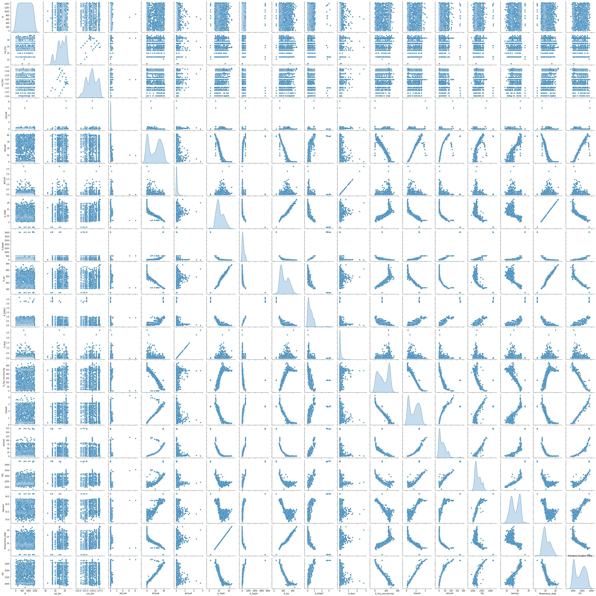

# Import libraries
import numpy as np
import pandas as pd
import pandas as pd
from sklearn.ensemble import RandomForestRegressor, GradientBoostingRegressor
from sklearn.model_selection import train_test_split, RandomizedSearchCV, cross_val_score, GridSearchCV
from sklearn.metrics import mean_squared_error, mean_absolute_error, r2_score
import xgboost as xgb
from xgboost import XGBRegressor
import seaborn as sns
import matplotlib.pyplot as plt
from sklearn.feature_selection import RFE
from sklearn.linear_model import LinearRegression
from sklearn.base import BaseEstimator, RegressorMixin
from sklearn.svm import SVR
from sklearn.preprocessing import StandardScaler
from sklearn.pipeline import make_pipelineA. CalCOFI dataset 1. Importance in oceanographic research 2. Long-term data collection (70+ years) 3. Physical, chemical, and biological properties
What’s DIC?
Dissolved inorganic carbon (DIC) is an crucial component of the ocean’s carbon cycle and has significant implications for the health of marine life and climate change as well. Image this: instead of fluid, the ocean is a massive sponge that soaks up carbon dioxide from the atmosphere. Over time, the carbon dioxide dissolves into the water and transforms into different types of dissolved inorganic carbon like carbonic acid and bicarbonate (I won’t cover the chemistry of this transition, but you can learn more about that at [@ScienceDirect]). These types of DIC are kept steady by the pH levels of the ocean (roughly 8.1). Now imagine the sponge, already full, trying to squeeze in more carbon dioxide. This is where things are at at this moment in time: humans are stuffing more carbon dioxide into the atmosphere by burning fossil fuels and cutting down forests, whcih is causing the oceans to absord more carbon dioxide than they are equipped to handle. Increasing the amounts of carbon dioxide in the ocean leads to a malicious process called ocean acidification. The higher carbon dioxide absorption causes a shiftin the delicate balance of DIC in the ocean, causing a decrease in the ocean’s pH level. This is bad news bears for almost anything and everything living in the ocean.
Ocean acidification can have serious consequences on marine organisms that rely on calcification to build their skeletons and shells. Organisms include coral, plankton, crabs, lobsters, and more. And think about this: coral reefs are home to an abundance of life. Often referred to as the rainforests of the sea, coral reefs cover less than one percent of the ocean floor, but support roughly 25 percent of all known marine species. Pretty incredible, and for all of these animals to be put in danger as well makes the impact of ocean acidification nearly incomprehensible. Here’s some science for you: as the ocean gets more acidic, there is a lower supply of carbonate ions which in turns makes it challening for these organisms that rely on calcification to actually build their structures. This reminds me of a situation where the half of the wood on Earth gets infested with something and is unusable, causing the construction industry to go down, then all goods-producing industries, then subsequently every other industry in the global economy to just crash and burn. Coral reefs technically have it even worse than the shellfish since they face the impact of reduced calcification rates AND higher rates of dissolution of their calcium carbonate structures (or backbone). Ocean acidification has extreme consequences, and it is our obligation to limit it as best we can.
To make maters worse, rising ocean temperatures and deviations in typical oceanographic patterns can impact the spread and cycle of DIC across the ocean. Warmer waters aren’t able to absorb as much carbon dioxide, so as the ocean rises it is likely going to be the case that less carbon is actually drawn from the atmosphere and absorbed by the ocean. Double whammie!
Here is what can be done: reduce our carbon emissions and restore coastal ecosystems, and we could be in luck!
Importance of Predicting DIC
Using ML
If we want to tackle the challenges posed by ocean acidification and climate change, we need to be able to predict DIC levels accurately. Here where machine learning comes in to play.
By harnessing the power of data and advanced algorithms, we can develop models that help us assess the extent of ocean acidification across different locations and time scales. This is critical for understanding the potential impacts on marine ecosystems and identifying the areas that are most vulnerable. Predicting DIC levels also enables us to establish specific, tailored, and powerful mitigation strategies. By anticipating future changes in DIC and their consequences, we can make informed, (hopefully) accurate decisions about how to allocate resources, prioritize conservation efforts, and adapt our management approaches. That sounds wonderful!
In this analysis, my goal was to build a predictive model for DIC using a machine learning approach. I found that XGBoost, a powerful algorithm known for its ability to handle complex relationships and deliver accurate predictions, was the best model based on the data set we were given. I tried a few Random Forest methods, but did not get quite the same results as from XGBoost. By training the model on a dataset of various oceanographic parameters, such as temperature, salinity, and nutrient concentrations, the goal was to capture and understand the underlying patterns and relationships that influence DIC levels. I also dove deep into the data, exploring the distributions, correlations, and potential multicollinearity among the variables. This let me gain (and now you, the reader) a more holistic understanding of the factors at play.
Equity Consequences
The impacts of elevated DIC levels on marine ecosystems extend far beyond the realm of environmental conservation. They have profound socio-economic implications that ring through coastal communities and beyond. Many of these communities rely heavily on the health and productivity of marine environments for their livelihoods, and the degradation of these ecosystems can have severe consequences.
Consider the coral reefs again, which are particularly vulnerable to ocean acidification. These underwater hotspots are not only beautiful but also serve as the foundation for thriving ecosystems that support an astonishing diversity of life. Coral reefs attract tourists from around the world, generating significant revenue for local economies through activities such as snorkeling, diving, and beach tourism. However, as DIC levels rise and the ocean becomes more acidic, the delicate balance that sustains these reefs is disrupted. The deterioration of coral reefs can lead to a landslide of ecological effects, culminating in the loss of biodiversity and the decline of the tourism industry that relies on their allure.
Moreover, the socio-economic consequences of elevated DIC levels extend to the realm of fisheries. Lots of coastal communities rely on fishing as a primary source of both sustenance and income. As ocean acidification alters the chemistry of precious waters, it can have detrimental effects on the growth, survival, and reproduction of many marine species. The destruction of fish populations and altered species distributions can have severe implications for the livelihoods of fishermen and the communities they support. The loss of income and food security can ripple through these societies, exacerbating poverty and social instability. For many coastal communities, the ocean is not merely a resource to be exploited but an integral part of their cultural heritage and identity. The degradation of marine environments can erode the very fabric of these societies, undermining traditional practices, knowledge systems, and social structures that have evolved in harmony with the sea. The loss of cultural heritage and the severing of deep-rooted connections to the ocean can have profound psychological and emotional consequences for these communities.
Tools and Techniques
I worked in Python and used its ecosystems of data science libraries, such as pandas, matplotlib, and scikit-learn. Utilizing techniques like cross-validation and hyperparameter tuning, I storve to build a sturyd and generalizable pipeline that serves as a small example of how data science can help curb the effects of the climate crisis.
Data Exploration and Preprocessing
- Highlight any interesting insights or patterns you discovered during exploratory analysis
First, the data is read in and quickly cleaned up.
# Read in data
data = pd.read_csv("data/training.csv")
test_data = pd.read_csv('data/test.csv')
# Remove the NA values
data = data.drop('Unnamed: 12', axis=1)
# Rename columns to match test data
data = data.rename(columns={'TA1.x': 'TA1'})data.columnsIndex(['id', 'Lat_Dec', 'Lon_Dec', 'NO2uM', 'NO3uM', 'NH3uM', 'R_TEMP',
'R_Depth', 'R_Sal', 'R_DYNHT', 'R_Nuts', 'R_Oxy_micromol.Kg', 'PO4uM',
'SiO3uM', 'TA1', 'Salinity1', 'Temperature_degC', 'DIC'],
dtype='object')The dataset encompasses a wide array of oceanographic variables that can potentially influence dissolved inorganic carbon (DIC) levels in the ocean. Key features include latitude and longitude (Lat_Dec, Lon_Dec), which provide spatial context and can capture regional variations in DIC. Nutrient concentrations such as nitrite (NO2uM), nitrate (NO3uM), ammonia (NH3uM), phosphate (PO4uM), and silicate (SiO3uM) are essential for marine primary production and can affect the biological pump that influences DIC levels. Physical parameters like temperature (R_TEMP, Temperature_degC), depth (R_Depth), salinity (R_Sal, Salinity1), and dynamic height (R_DYNHT) play crucial roles in determining the solubility and distribution of DIC in the water column. Dissolved oxygen (R_Oxy_micromol.Kg) and total alkalinity (TA1) are closely linked to the carbonate system and can provide insights into the carbonate chemistry that regulates DIC concentrations.
# Distribution of DIC in data
plt.figure(figsize=(8, 6))
plt.hist(data['DIC'], bins=20)
plt.xlabel('DIC')
plt.ylabel('Frequency')
plt.title('Distribution of DIC')
plt.show()
The distribution of DIC is somewhat bimodal, with beaks around 2000 and 2300.
# Correlation heatmap
plt.figure(figsize=(12, 10))
sns.heatmap(data.corr(), annot=True, cmap='coolwarm', square=True)
plt.title('Correlation Heatmap')
plt.show()
Even a quick glance reveals that there are some strong levels working in the data across the different features. While some are obviosuly 1 (like temperature in farenheit and celcius), closely examining the heatmap gives us lots of insights into how the features are related to each other, and look into the issue over multicollinearity.
# Looking for outliers
plt.figure(figsize=(12, 8))
data.boxplot(column=['Lat_Dec', 'Lon_Dec', 'NO2uM', 'NO3uM', 'NH3uM', 'R_TEMP', 'R_Depth', 'R_Sal', 'R_DYNHT', 'R_Nuts', 'R_Oxy_micromol.Kg', 'PO4uM', 'SiO3uM', 'TA1', 'Salinity1', 'Temperature_degC', 'DIC'])
plt.xticks(rotation=45)
plt.title('Boxplots of Numerical Features')
plt.show()
Might have to do some normalizing, I’m not totally sure yet.
corr_matrix = data.corr()
print("Correlation Matrix:")
print(corr_matrix)Correlation Matrix:
id Lat_Dec Lon_Dec NO2uM NO3uM NH3uM \
id 1.000000 -0.038276 0.032081 0.010521 -0.010648 -0.008376
Lat_Dec -0.038276 1.000000 0.143350 0.092121 0.047306 0.025656
Lon_Dec 0.032081 0.143350 1.000000 0.026807 0.018539 0.063730
NO2uM 0.010521 0.092121 0.026807 1.000000 -0.127036 0.115571
NO3uM -0.010648 0.047306 0.018539 -0.127036 1.000000 -0.271022
NH3uM -0.008376 0.025656 0.063730 0.115571 -0.271022 1.000000
R_TEMP 0.006920 -0.021435 0.045179 0.020522 -0.933583 0.228610
R_Depth 0.030571 -0.143631 -0.111881 -0.029772 0.508515 -0.145500
R_Sal 0.006151 -0.069319 -0.026433 0.032799 -0.957965 0.228303
R_DYNHT 0.015389 -0.167146 -0.121625 -0.045207 0.762652 -0.228297
R_Nuts -0.008376 0.025656 0.063730 0.115571 -0.271022 1.000000
R_Oxy_micromol.Kg 0.012270 -0.098267 -0.085730 0.052974 -0.965962 0.280080
PO4uM -0.008988 0.091319 0.048614 -0.008006 0.976118 -0.256997
SiO3uM 0.013965 -0.016170 -0.053141 0.010939 0.857180 -0.242184
TA1 0.018413 0.018881 0.030687 -0.005523 0.792031 -0.190671
Salinity1 0.006179 0.103488 0.138710 -0.076072 0.918598 -0.226156
Temperature_degC 0.007114 -0.022524 0.044673 0.020409 -0.933754 0.228463
DIC -0.008105 0.077621 0.044557 -0.026785 0.979850 -0.252974
R_TEMP R_Depth R_Sal R_DYNHT R_Nuts \
id 0.006920 0.030571 0.006151 0.015389 -0.008376
Lat_Dec -0.021435 -0.143631 -0.069319 -0.167146 0.025656
Lon_Dec 0.045179 -0.111881 -0.026433 -0.121625 0.063730
NO2uM 0.020522 -0.029772 0.032799 -0.045207 0.115571
NO3uM -0.933583 0.508515 -0.957965 0.762652 -0.271022
NH3uM 0.228610 -0.145500 0.228303 -0.228297 1.000000
R_TEMP 1.000000 -0.583892 0.986747 -0.798440 0.228610
R_Depth -0.583892 1.000000 -0.543556 0.904710 -0.145500
R_Sal 0.986747 -0.543556 1.000000 -0.771583 0.228303
R_DYNHT -0.798440 0.904710 -0.771583 1.000000 -0.228297
R_Nuts 0.228610 -0.145500 0.228303 -0.228297 1.000000
R_Oxy_micromol.Kg 0.869693 -0.432215 0.913799 -0.709405 0.280080
PO4uM -0.928439 0.499634 -0.956169 0.762081 -0.256997
SiO3uM -0.861262 0.806016 -0.856864 0.936014 -0.242184
TA1 -0.757048 0.786738 -0.783237 0.890010 -0.190671
Salinity1 -0.823260 0.567344 -0.890545 0.764865 -0.226156
Temperature_degC 0.999983 -0.579262 0.986931 -0.795282 0.228463
DIC -0.936952 0.555750 -0.963751 0.797196 -0.252974
R_Oxy_micromol.Kg PO4uM SiO3uM TA1 Salinity1 \
id 0.012270 -0.008988 0.013965 0.018413 0.006179
Lat_Dec -0.098267 0.091319 -0.016170 0.018881 0.103488
Lon_Dec -0.085730 0.048614 -0.053141 0.030687 0.138710
NO2uM 0.052974 -0.008006 0.010939 -0.005523 -0.076072
NO3uM -0.965962 0.976118 0.857180 0.792031 0.918598
NH3uM 0.280080 -0.256997 -0.242184 -0.190671 -0.226156
R_TEMP 0.869693 -0.928439 -0.861262 -0.757048 -0.823260
R_Depth -0.432215 0.499634 0.806016 0.786738 0.567344
R_Sal 0.913799 -0.956169 -0.856864 -0.783237 -0.890545
R_DYNHT -0.709405 0.762081 0.936014 0.890010 0.764865
R_Nuts 0.280080 -0.256997 -0.242184 -0.190671 -0.226156
R_Oxy_micromol.Kg 1.000000 -0.984506 -0.845775 -0.801070 -0.929567
PO4uM -0.984506 1.000000 0.887765 0.824866 0.925998
SiO3uM -0.845775 0.887765 1.000000 0.957445 0.870885
TA1 -0.801070 0.824866 0.957445 1.000000 0.897201
Salinity1 -0.929567 0.925998 0.870885 0.897201 1.000000
Temperature_degC 0.870070 -0.928617 -0.859068 -0.754551 -0.822527
DIC -0.978868 0.994955 0.908763 0.852646 0.940914
Temperature_degC DIC
id 0.007114 -0.008105
Lat_Dec -0.022524 0.077621
Lon_Dec 0.044673 0.044557
NO2uM 0.020409 -0.026785
NO3uM -0.933754 0.979850
NH3uM 0.228463 -0.252974
R_TEMP 0.999983 -0.936952
R_Depth -0.579262 0.555750
R_Sal 0.986931 -0.963751
R_DYNHT -0.795282 0.797196
R_Nuts 0.228463 -0.252974
R_Oxy_micromol.Kg 0.870070 -0.978868
PO4uM -0.928617 0.994955
SiO3uM -0.859068 0.908763
TA1 -0.754551 0.852646
Salinity1 -0.822527 0.940914
Temperature_degC 1.000000 -0.936781
DIC -0.936781 1.000000 from sklearn.decomposition import PCA
# Extract the feature columns
X_features = data.drop(['DIC'], axis=1)
# Perform PCA
pca = PCA()
pca.fit(X_features)
# Explained variance ratio
explained_variance_ratio = pca.explained_variance_ratio_
print("Explained Variance Ratio:")
for i, ratio in enumerate(explained_variance_ratio):
print(f"Principal Component {i+1}: {ratio:.3f}")Explained Variance Ratio:
Principal Component 1: 0.560
Principal Component 2: 0.400
Principal Component 3: 0.038
Principal Component 4: 0.002
Principal Component 5: 0.000
Principal Component 6: 0.000
Principal Component 7: 0.000
Principal Component 8: 0.000
Principal Component 9: 0.000
Principal Component 10: 0.000
Principal Component 11: 0.000
Principal Component 12: 0.000
Principal Component 13: 0.000
Principal Component 14: 0.000
Principal Component 15: 0.000
Principal Component 16: 0.000
Principal Component 17: 0.000Love PCA! Talk about it a bit here
plt.figure(figsize=(12, 10))
sns.pairplot(data, diag_kind='kde')
plt.title('Pairwise Scatter Plots')
plt.show()<Figure size 864x720 with 0 Axes>
A gem of a chart. Unpack what’s going on here in detail, and give some examples (backed by science)
Now, I’ll go ahead and split the (training) data into training and testing sets, choosing an 80/20 split.
# Split the data into features and target variable
X = data.drop(['DIC'], axis=1)
y = data['DIC']
# Split the data into training and testing sets
X_train, X_test, y_train, y_test = train_test_split(X, y, test_size=0.20, random_state=42)
print(f'X_train : {X_train.shape}')
print(f'y_train : {y_train.shape}')
print(f'X_test : {X_test.shape}')
print(f'y_test : {y_test.shape}')Model Selection and Training
I started by choosing Random Forest as my model of choice to predict DIC levels, but I found that XGBoost performs stronger on the training and testing data so I opted for that one instead.
I implemenet - Discuss your approach to model selection and hyperparameter tuning using techniques like RandomizedSearchCV and GridSearchCV - Share the results of your model training, including evaluation metrics like root mean squared error
# Random Forest
# Define the hyperparameter grid
param_grid_rf = {
'n_estimators': [100, 200, 500],
'max_depth': [None, 5, 10, 20],
'min_samples_split': [2, 5, 10],
'min_samples_leaf': [1, 2, 4],
'max_features': ['auto', 'sqrt', 'log2']
}
# Create and train the random forest model
rf_model = RandomForestRegressor(n_estimators=1000, random_state=42)
rf_model.fit(X_train, y_train)
# Perform RandomizedSearchCV
random_search = RandomizedSearchCV(estimator=rf_model,
param_distributions=param_grid_rf,
n_iter=100,
cv=5,
scoring='neg_mean_squared_error',
random_state=42,
n_jobs=-1,
verbose=1)
# Fit the RandomizedSearchCV on the training data
random_search.fit(X_train, y_train)
# Print the best hyperparameters
print("Best Hyperparameters:", random_search.best_params_)
# Make predictions on the testing data
y_pred = random_search.best_estimator_.predict(X_test)
# Evaluate the model
mse = mean_squared_error(y_test, y_pred)
mae = mean_absolute_error(y_test, y_pred)
r2 = r2_score(y_test, y_pred)
print("Mean Squared Error:", mse)
print("Mean Absolute Error:", mae)
print("R-squared:", r2)
# Perform cross-validation on the training data
scores = cross_val_score(random_search.best_estimator_, X_train, y_train, cv=5, scoring='neg_root_mean_squared_error')
rmse_train = -np.mean(scores)
print(f"Training RMSE: {rmse_train:.4f}")
# Make predictions using the trained model
rf_model = RandomForestRegressor(n_estimators=200,
min_samples_split=2,
min_samples_leaf=1,
max_features='log2',
max_depth=None,
random_state=42)
rf_model.fit(X, y) # Assuming X_imputed and y are the imputed training data and target variable
predictions = rf_model.predict(test_data)
# Create a submission DataFrame
submission_df = pd.DataFrame({'id': test_data['id'], 'DIC': predictions})
# Save the submission DataFrame to a CSV file
# submission_df.to_csv('submission.csv', index=False)Fitting 5 folds for each of 100 candidates, totalling 500 fits
Best Hyperparameters: {'n_estimators': 500, 'min_samples_split': 2, 'min_samples_leaf': 1, 'max_features': 'sqrt', 'max_depth': 20}
Mean Squared Error: 30.34512666623212
Mean Absolute Error: 3.0584250779257967
R-squared: 0.9977299460851863
Training RMSE: 5.9632from sklearn.ensemble import RandomForestRegressor, AdaBoostRegressor
from sklearn.model_selection import GridSearchCV
# Define the parameter grid for random forest
rf_param_grid = {
'n_estimators': [50, 100, 200],
'max_depth': [None, 5, 10],
'min_samples_split': [2, 5, 10],
'min_samples_leaf': [1, 2, 4]
}
# Define the parameter grid for AdaBoost
ada_param_grid = {
'n_estimators': [50, 100, 200],
'learning_rate': [0.01, 0.1, 1.0]
}
# Create the base random forest model
rf_model = RandomForestRegressor(random_state=42)
# Perform grid search for random forest
rf_grid_search = GridSearchCV(estimator=rf_model, param_grid=rf_param_grid, cv=5, scoring='neg_mean_squared_error', n_jobs=-1)
rf_grid_search.fit(X_train, y_train)
# Get the best random forest model
best_rf_model = rf_grid_search.best_estimator_
# Create the AdaBoost regressor with the best random forest as the base estimator
ada_model = AdaBoostRegressor(base_estimator=best_rf_model, random_state=42)
# Perform grid search for AdaBoost
ada_grid_search = GridSearchCV(estimator=ada_model, param_grid=ada_param_grid, cv=5, scoring='neg_mean_squared_error', n_jobs=-1)
ada_grid_search.fit(X_train, y_train)
# Get the best boosted random forest model
best_boosted_rf_model = ada_grid_search.best_estimator_
# Predict on the test set using the best boosted random forest model
predictions = best_boosted_rf_model.predict(X_test)
# Evaluate the model
mse = mean_squared_error(y_test, predictions)
print("Root Mean Squared Error:", np.sqrt(mse))
# Prepare the actual test data features
test_data_features = test_data[X.columns]
# Make predictions on the actual test data using the best boosted random forest model
predictions_actual_test_data = best_boosted_rf_model.predict(test_data_features)
submission_df = pd.DataFrame({
'id': test_data['id'],
'DIC': predictions_actual_test_data
})
submission_csv_path = 'data/final_submission_boosted_rf_tuned.csv'
submission_df.to_csv(submission_csv_path, index=False)/Users/maxwellpatterson/opt/anaconda3/lib/python3.8/site-packages/joblib/externals/loky/process_executor.py:688: UserWarning: A worker stopped while some jobs were given to the executor. This can be caused by a too short worker timeout or by a memory leak.
warnings.warn(Root Mean Squared Error: 5.4253004560182685# XGBoost
from sklearn.model_selection import RandomizedSearchCV
param_distributions = {
'learning_rate': [0.01, 0.05, 0.1, 0.2, 0.3],
'n_estimators': [50, 100, 200, 300, 400, 500],
'max_depth': [3, 5, 7, 9, 11, 13, 15],
'subsample': [0.6, 0.7, 0.8, 0.9, 1.0],
'colsample_bytree': [0.3, 0.4, 0.5, 0.6, 0.7, 0.8, 0.9, 1.0]
}
# Create the XGBoost model
xgb_model = xgb.XGBRegressor(random_state=42)
# Perform random search with cross-validation
random_search = RandomizedSearchCV(estimator=xgb_model,
param_distributions=param_distributions,
n_iter=50, # Number of parameter settings to sample
cv=5,
scoring='neg_mean_squared_error',
verbose=1,
random_state=42)
random_search.fit(X_train, y_train)
# Get the best model and its parameters
best_model = random_search.best_estimator_
best_params = random_search.best_params_
print("Best Parameters:", best_params)
# Make predictions using the best model
y_pred = best_model.predict(X_test)Fitting 5 folds for each of 50 candidates, totalling 250 fits
Best Parameters: {'subsample': 0.6, 'n_estimators': 500, 'max_depth': 3, 'learning_rate': 0.05, 'colsample_bytree': 0.6}# Calculate the Mean Absolute Error (MAE)
mae = mean_absolute_error(y_test, y_pred)
# Calculate the R-squared (R^2) score
r2 = r2_score(y_test, y_pred)
# Print the MAE and R^2 scores
print("Mean Absolute Error (MAE):", mae)
print("R-squared (R^2) Score:", r2)Mean Absolute Error (MAE): 3.134408275853739
R-squared (R^2) Score: 0.9978656383611391# Convert the dataset into a data structure that XGBoost supports
dtrain = xgb.DMatrix(X_train, label=y_train)
dtest = xgb.DMatrix(X_test, label=y_test)
# Define the parameters for the XGBoost model
params = {
'learning_rate': 0.05,
'n_estimators': 500,
'max_depth': 3,
'subsample': 0.6,
'colsample_bytree': 0.6,
'objective': 'reg:squarederror',
'random_state': 42
}
# Specify the number of cross-validation folds and the metrics for evaluation
cv_results = xgb.cv(
dtrain=dtrain,
params=params,
nfold=5,
num_boost_round=500, # The number of boosting rounds or trees to build
early_stopping_rounds=50, # Stop if the metric does not improve in these many rounds
metrics="rmse",
as_pandas=True,
seed=13
)
# Display the CV results
print(cv_results)
best_num_boost_round = len(cv_results)
# Train the model with the best number of boosting rounds
final_model = xgb.train(
params=params,
dtrain=dtrain,
num_boost_round=best_num_boost_round
)
# Predict on the test set
predictions = final_model.predict(dtest)
# Evaluate the final model (you can use any evaluation metric that suits your problem)
final_mse_cv = cv_results['test-rmse-mean'].iloc[-1] # Last row's RMSE squared to get MSE
print("Root Mean Squared Error:", final_mse_cv)
# Ensure test_data_features is prepared with the same features as those used during the model training
test_data_features = test_data[X.columns] # Assuming 'X.columns' contains the correct features
# Create a DMatrix for the actual test data (test_data_features)
dtest_actual = xgb.DMatrix(test_data_features)
# Use the trained model to make predictions on the actual test dataset
predictions_actual_test_data = final_model.predict(dtest_actual)
submission_df = pd.DataFrame({
'id': test_data['id'],
'DIC': predictions_actual_test_data
})
submission_csv_path = 'data/final_submission_rs.csv'
submission_df.to_csv(submission_csv_path, index=False)/Users/maxwellpatterson/opt/anaconda3/lib/python3.8/site-packages/xgboost/core.py:160: UserWarning: [22:22:40] WARNING: /Users/runner/work/xgboost/xgboost/src/learner.cc:742:
Parameters: { "n_estimators" } are not used.
warnings.warn(smsg, UserWarning)
/Users/maxwellpatterson/opt/anaconda3/lib/python3.8/site-packages/xgboost/core.py:160: UserWarning: [22:22:41] WARNING: /Users/runner/work/xgboost/xgboost/src/learner.cc:742:
Parameters: { "n_estimators" } are not used.
warnings.warn(smsg, UserWarning) train-rmse-mean train-rmse-std test-rmse-mean test-rmse-std
0 107.004785 0.792631 107.085641 3.286523
1 101.791400 0.771185 101.870388 3.162677
2 96.834267 0.729556 96.919886 3.048361
3 92.131780 0.687460 92.245071 2.934377
4 87.665866 0.648326 87.767277 2.834403
.. ... ... ... ...
495 2.481191 0.057729 6.203033 0.560730
496 2.476859 0.055060 6.202946 0.560677
497 2.473785 0.054023 6.201595 0.560396
498 2.470109 0.051466 6.202116 0.560695
499 2.465697 0.052848 6.202022 0.560889
[500 rows x 4 columns]
Root Mean Squared Error: 6.202021641713651# Convert the dataset into a data structure that XGBoost supports
dtrain = xgb.DMatrix(X_train, label=y_train)
dtest = xgb.DMatrix(X_test, label=y_test)
# Define the parameter sets for different XGBoost models
params_list = [
{'learning_rate': 0.05, 'n_estimators': 500, 'max_depth': 3, 'subsample': 0.6, 'colsample_bytree': 0.6},
{'learning_rate': 0.1, 'n_estimators': 300, 'max_depth': 5, 'subsample': 0.8, 'colsample_bytree': 0.8},
{'learning_rate': 0.02, 'n_estimators': 1000, 'max_depth': 4, 'subsample': 0.7, 'colsample_bytree': 0.7}
]
# Create an empty list to store the trained models
models = []
# Train multiple XGBoost models with different parameter settings
for params in params_list:
params['objective'] = 'reg:squarederror'
params['random_state'] = 42
cv_results = xgb.cv(
dtrain=dtrain,
params=params,
nfold=5,
num_boost_round=500,
early_stopping_rounds=50,
metrics="rmse",
as_pandas=True,
seed=13
)
best_num_boost_round = len(cv_results)
model = xgb.train(
params=params,
dtrain=dtrain,
num_boost_round=best_num_boost_round
)
models.append(model)
# Predict on the test set using each model and compute the average predictions
ensemble_predictions = np.zeros(dtest.num_row())
for model in models:
predictions = model.predict(dtest)
ensemble_predictions += predictions
ensemble_predictions /= len(models)
# Evaluate the ensemble model
final_mse_cv = mean_squared_error(y_test, ensemble_predictions)
print("Root Mean Squared Error:", np.sqrt(final_mse_cv))
# Prepare the actual test data features
test_data_features = test_data[X.columns]
dtest_actual = xgb.DMatrix(test_data_features)
# Make predictions on the actual test data using the ensemble model
ensemble_predictions_actual_test_data = np.zeros(dtest_actual.num_row())
for model in models:
predictions_actual_test_data = model.predict(dtest_actual)
ensemble_predictions_actual_test_data += predictions_actual_test_data
ensemble_predictions_actual_test_data /= len(models)
submission_df = pd.DataFrame({
'id': test_data['id'],
'DIC': ensemble_predictions_actual_test_data
})
submission_csv_path = 'data/final_submission_ensemble.csv'
submission_df.to_csv(submission_csv_path, index=False)/Users/maxwellpatterson/opt/anaconda3/lib/python3.8/site-packages/xgboost/core.py:160: UserWarning: [22:27:36] WARNING: /Users/runner/work/xgboost/xgboost/src/learner.cc:742:
Parameters: { "n_estimators" } are not used.
warnings.warn(smsg, UserWarning)
/Users/maxwellpatterson/opt/anaconda3/lib/python3.8/site-packages/xgboost/core.py:160: UserWarning: [22:27:38] WARNING: /Users/runner/work/xgboost/xgboost/src/learner.cc:742:
Parameters: { "n_estimators" } are not used.
warnings.warn(smsg, UserWarning)
/Users/maxwellpatterson/opt/anaconda3/lib/python3.8/site-packages/xgboost/core.py:160: UserWarning: [22:27:40] WARNING: /Users/runner/work/xgboost/xgboost/src/learner.cc:742:
Parameters: { "n_estimators" } are not used.
warnings.warn(smsg, UserWarning)
/Users/maxwellpatterson/opt/anaconda3/lib/python3.8/site-packages/xgboost/core.py:160: UserWarning: [22:27:42] WARNING: /Users/runner/work/xgboost/xgboost/src/learner.cc:742:
Parameters: { "n_estimators" } are not used.
warnings.warn(smsg, UserWarning)Root Mean Squared Error: 5.436212225017084Model Evaluation and Interpretation
- Interpret the model results, including analyzing feature importances to understand which variables are most predictive of DIC levels
- Discuss any limitations or caveats to your modeling approach
# Learning Curve
from sklearn.model_selection import learning_curve
train_sizes, train_scores, test_scores = learning_curve(
estimator=xgb.XGBRegressor(objective='reg:squarederror', **best_params),
X=X, y=y,
train_sizes=np.linspace(0.1, 1.0, 10),
cv=5, scoring='neg_mean_squared_error', n_jobs=-1)
# Plot the learning curve
plt.figure()
plt.title("Learning Curve")
plt.xlabel("Training Set Size")
plt.ylabel("Negative Mean Squared Error")
plt.plot(train_sizes, -train_scores.mean(axis=1), label="Training score")
plt.plot(train_sizes, -test_scores.mean(axis=1), label="Cross-validation score")
plt.legend(loc="best")
plt.show()
# Feature Importance
xgb_model = xgb.XGBRegressor(objective='reg:squarederror', **best_params)
xgb_model.fit(X_train, y_train)
feature_importances = xgb_model.feature_importances_
indices = np.argsort(feature_importances)[::-1]
plt.figure()
plt.title("Feature Importances")
plt.bar(range(X_train.shape[1]), feature_importances[indices],
color="r", align="center")
plt.xticks(range(X_train.shape[1]), X_train.columns[indices], rotation=90)
plt.xlim([-1, X_train.shape[1]])
plt.show()
print("Training set sizes:", train_sizes)
print("Training scores (Negative MSE):\n", train_scores)
print("Validation scores (Negative MSE):\n", test_scores)Training set sizes: [ 116 232 348 465 581 697 814 930 1046 1163]
Training scores (Negative MSE):
[[-9.99956912e-05 -4.48875931e-05 -4.48875931e-05 -4.48875931e-05
-4.48875931e-05]
[-4.85965430e-03 -3.58756928e-03 -3.58756928e-03 -3.58756928e-03
-3.58756928e-03]
[-3.33106308e-02 -1.89585256e-02 -2.17123444e-02 -2.17123444e-02
-2.17123444e-02]
[-9.33256137e-02 -7.01989493e-02 -7.85154216e-02 -7.85154216e-02
-7.85154216e-02]
[-1.72739081e-01 -1.44003641e-01 -1.30381761e-01 -1.30381761e-01
-1.30381761e-01]
[-2.39533868e-01 -2.50730626e-01 -2.47338423e-01 -2.37732325e-01
-2.37732325e-01]
[-3.57112494e-01 -3.55847598e-01 -4.22327769e-01 -3.91398858e-01
-3.91398858e-01]
[-4.74316204e-01 -4.70541422e-01 -5.23268350e-01 -4.72926254e-01
-5.08711505e-01]
[-6.05465066e-01 -6.20304339e-01 -7.32547199e-01 -6.19882345e-01
-5.86780844e-01]
[-8.57564023e-01 -8.76077021e-01 -8.59182856e-01 -7.92936413e-01
-7.84635593e-01]]
Validation scores (Negative MSE):
[[ -88.89479412 -158.46259056 -271.48825789 -110.64162757 -216.62701914]
[ -55.14024621 -76.68824704 -179.0780735 -76.20979962 -162.88731402]
[ -55.40054979 -79.14679055 -127.59255391 -60.64779931 -125.58908661]
[ -53.24218439 -35.07228322 -85.82395188 -101.90416245 -90.12854895]
[ -51.65801281 -37.81445262 -41.40162724 -51.56235276 -40.24510824]
[ -50.53647034 -36.92644596 -32.90932525 -45.27700885 -37.66795763]
[ -50.13721302 -36.24273256 -29.95333699 -33.45592183 -31.57463821]
[ -48.17150708 -30.14362447 -26.10883187 -32.37393992 -33.36267632]
[ -45.73562739 -29.60455241 -27.58651309 -34.08429642 -33.62065259]
[ -46.78893235 -25.05317752 -26.90810602 -32.3449201 -30.56800386]]learning_curve_data = pd.DataFrame({
'Training Set Size': train_sizes,
'Training Score (Negative MSE)': train_scores.mean(axis=1),
'Validation Score (Negative MSE)': test_scores.mean(axis=1)
})
print(learning_curve_data) Training Set Size Training Score (Negative MSE) \
0 116 -0.000056
1 232 -0.003842
2 348 -0.023481
3 465 -0.079814
4 581 -0.141578
5 697 -0.242614
6 814 -0.383617
7 930 -0.489953
8 1046 -0.632996
9 1163 -0.834079
Validation Score (Negative MSE)
0 -169.222858
1 -110.000736
2 -89.675356
3 -73.234226
4 -44.536311
5 -40.663442
6 -36.272769
7 -34.032116
8 -34.126328
9 -32.332628 Implications and Future Work
- Explain how predictive model could be useful for oceanographic research and understanding the carbon cycle
- Discuss potential applications of model, such as identifying areas of high or low DIC, or predicting future changes in ocean chemistry
- Suggest future work or improvements to analysis, such as incorporating additional data sources or trying more advanced modeling techniques
Conclusion
- Summarize the key findings of analysis and the performance of machine learning model
- Reiterate the importance of understanding and predicting DIC levels in the ocean
- Encourage readers to explore the code and data further and contribute to oceanographic research
Acknowledgments
- Acknowledge the CalCOFI program and any other sources of data or inspiration for your project